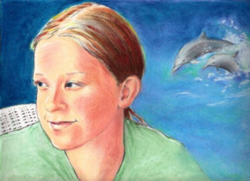

[Previous entry: "Hardyville: The Coup, Part II"] [Main Index] [Next entry: "DHS proposes "permission to travel"/I watch United 93"]
10/15/2006 Archived Entry: "Portrait of a young lady"

THIS IS THE YOUNG LADY whose very rough sketch I slashed out two weeks ago to help me deal with a mood of angry despair.
Now (with the permission of her parent, who just received the framed original of the above) I can show you what she really looks like. Has an attractive, intelligent face, doesn't she? The dolphins symbolize (uh oh, now Claire's starting to get all pretentious and artsy} ... well, actually they symbolize nothing more than one of her prime lifelong interests, marine mammals, their behavior and biology. The real pretentiously artsy part is where the hard line that defines most of her dissolves over there on the right so that her figure seems to merge with the watery dream-dolphin world.
Didn't notice that, eh? Uh ... okay, maybe that's more apparent in the original. Or in my fevered skull. :-) Anyhow, hope you enjoy the picture. It might be the best thing I've done to date.
Posted by Claire @ 12:34 AM CST
Link